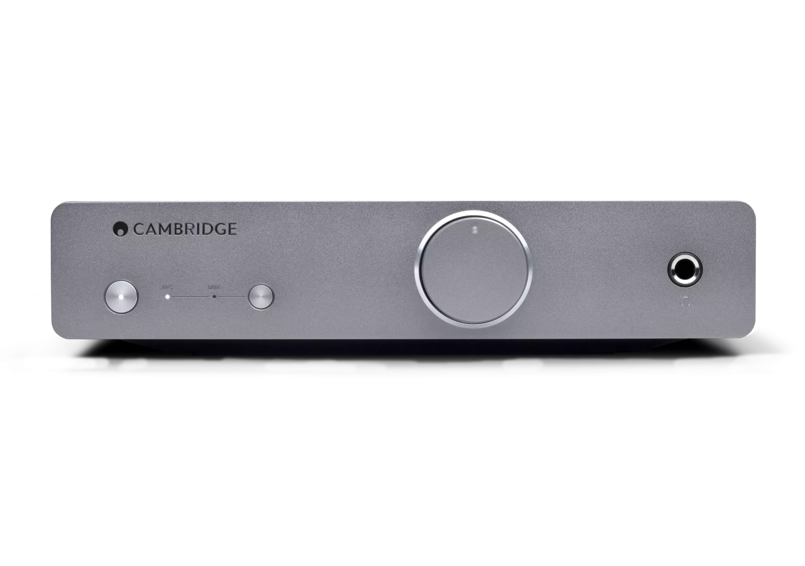
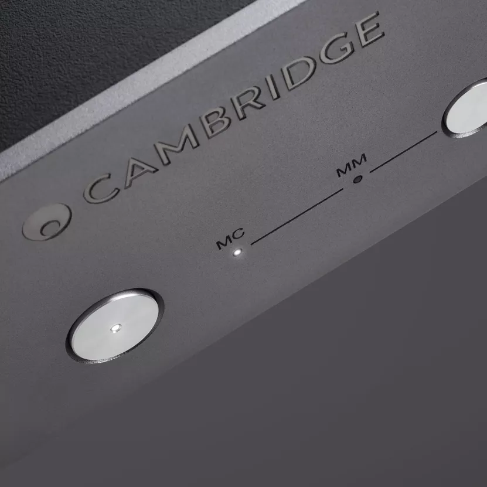
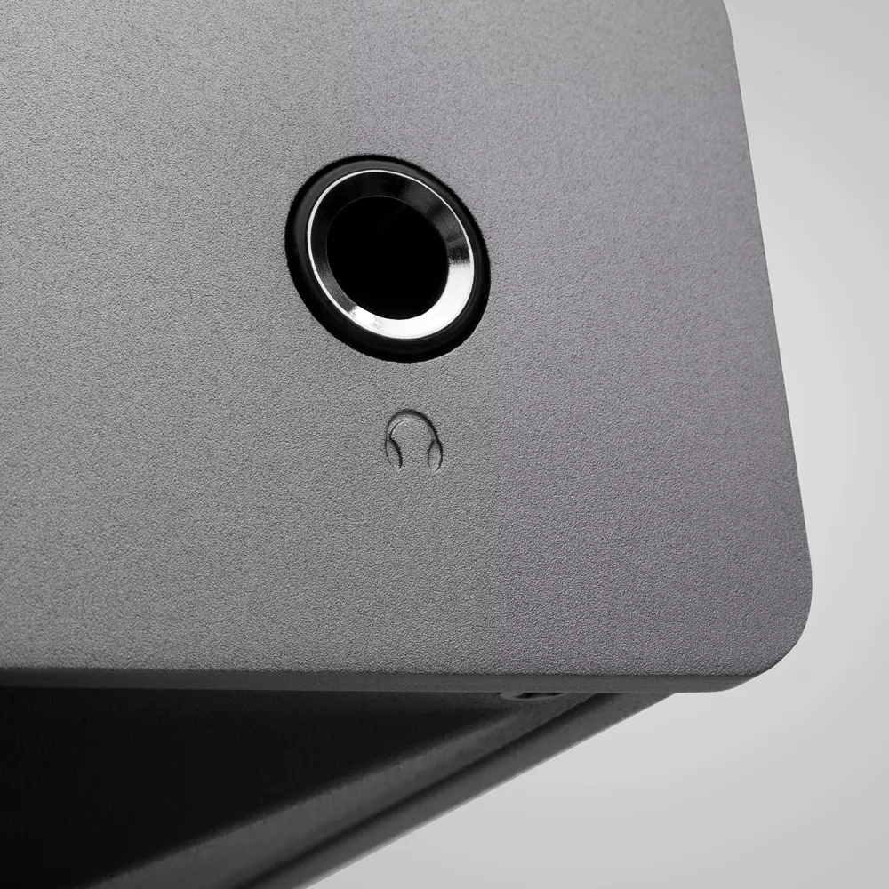
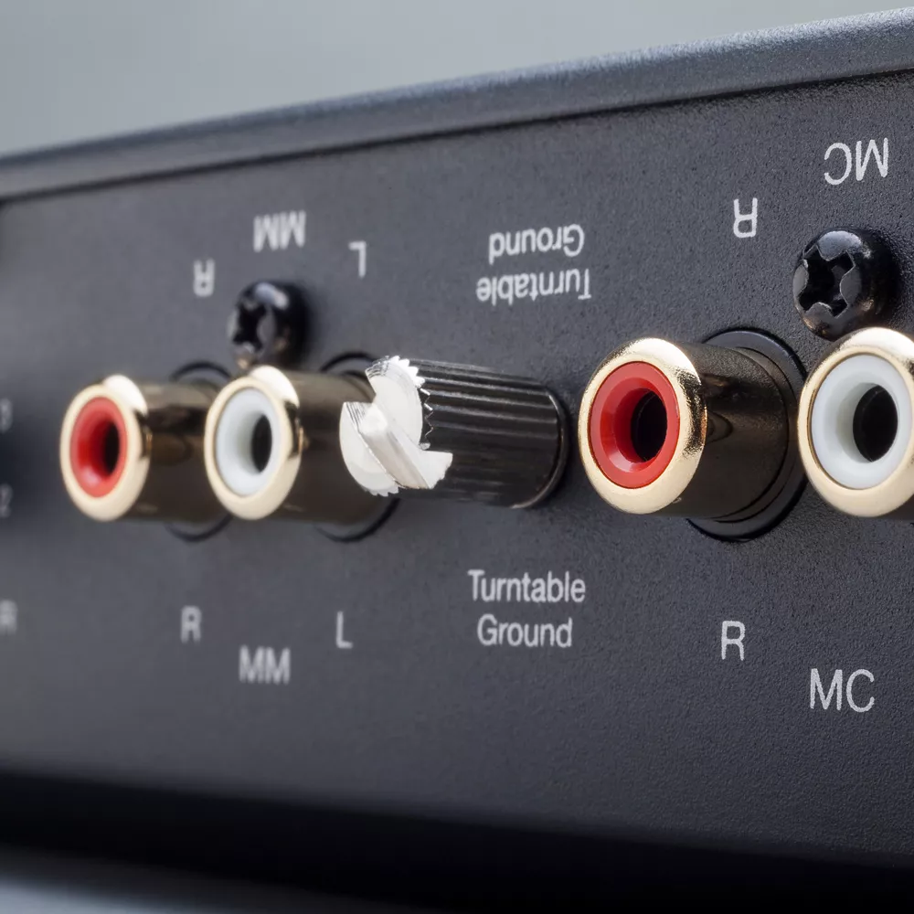
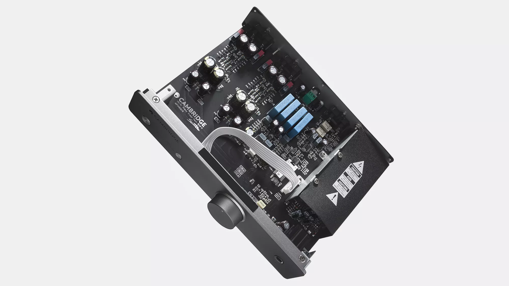
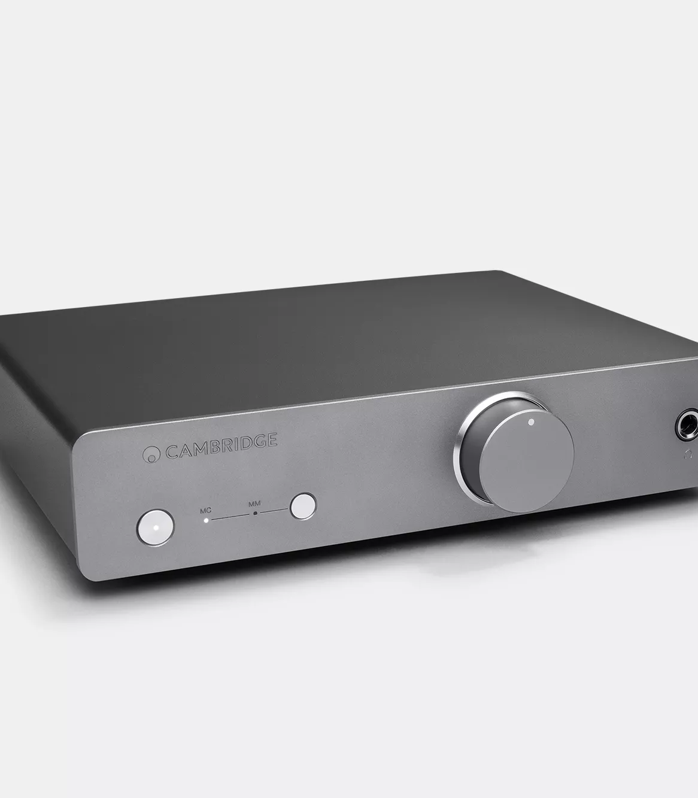
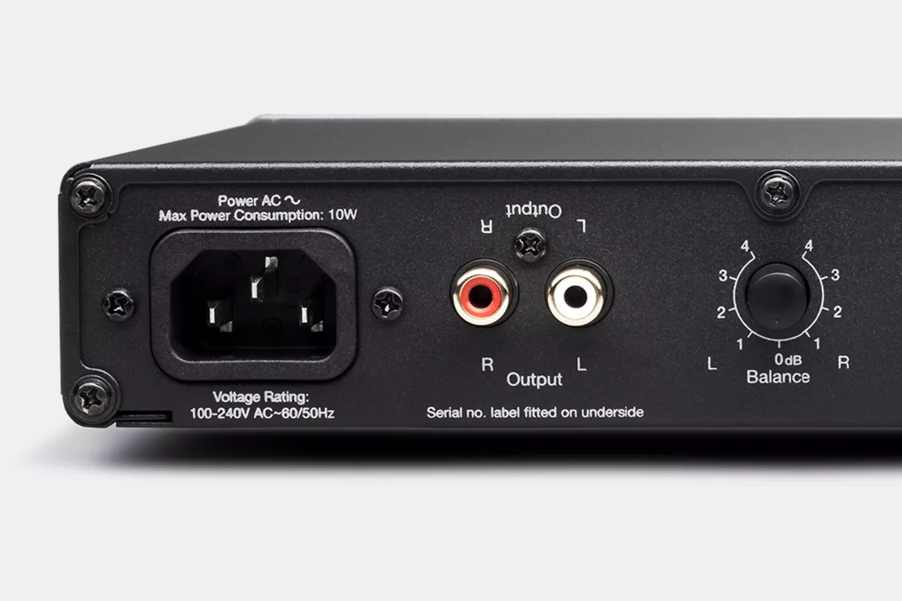

Alva Duo
高品質なムービングマグネット＆ムービングコイル対応フォノステージで、レコードコレクションの隅々までディテールを引き出します。Alva Duoは、Hi-Fiシステムを通じても、内蔵ヘッドホン出力からでも、ピュアで没入感のあるヴァイナル再生を実現します。



ヴァイナル体験を、洗練する
ムービングマグネットとムービングコイルの両方のカートリッジに対応するAlva Duoは、すべてのレコードを比類のない明瞭さ、温かみ、深みで再生します — まさに本来聴くべき音のままに。
プライベートリスニングの極致
深夜のリスニングがこれほど素晴らしく響いたことはありません。Alva Duo内蔵のヘッドホンアンプにより、Hi-Fiシステムの電源を入れることなく、ヴァイナルの豊かな温もりを存分に楽しめます。プラグインして、ピュアなアナログサウンドに没入してください。
ハムを消し、ディテールを残す
不要なノイズがレコードを曇らせることがありますが、Alva Duoの先進的なスイッチモード電源は可聴周波数域外で動作することでハムを排除します。精密な回路設計と相まって、干渉のないクリスタルクリアな再生を保証します。

VINYL, JUST FOR YOU
針がレコードに触れた瞬間から、Alva Duoは最先端のエンジニアリングでヴァイナル体験を向上させ、スピーカーを通じても内蔵ヘッドホン出力からのプライベートリスニングでも、最もピュアなアナログサウンドをお届けします。


精緻なサウンド、ピュアなヴァイナルパフォーマンス
専用MM＆MCフォノプリアンプ
ムービングマグネットとムービングコイルの両方のカートリッジをサポートし、より高い柔軟性と幅広いターンテーブルとの互換性を提供します。
スイッチモード電源
Alva Duoの電源は可聴周波数域外でスイッチングし、ハムやノイズを低減します。
表面実装回路基板
ピュアな信号伝送のために設計され、卓越した明瞭さと完璧なリスニング体験を保証します。
6.35mmヘッドホン出力
別途アンプを必要とせず、プライベートにリスニングできます。
オートパワーダウン
Alva Duoは20分間の無操作後に自動的に電源をオフにし、エネルギーを節約します。
サブソニックフィルター
劣化したレコードからの低周波ランブルを除去し、よりクリーンで洗練されたサウンドを実現します。
"充実したスペック、豊かなボディ感、ダイナミックなパフォーマー"
エコフレンドリーなリスニング
Alva Duoはレコードにも地球にも優しい設計です。スタンバイ時の消費電力は0.5W未満、20分間の無操作後にオートパワーダウン機能が作動。効率的で、世界中のあらゆる電圧に対応します。